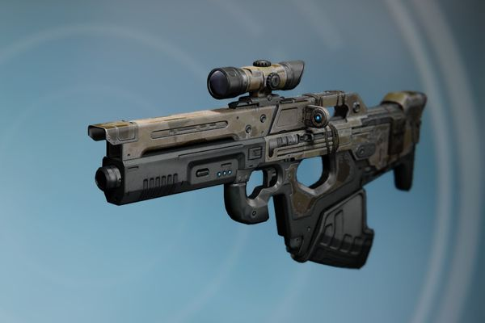
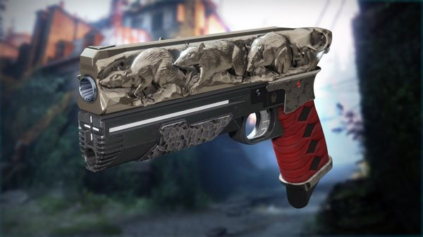

Страж, внимание. После завершения основной сюжетной компании «Красный Легион» становятся доступны 3 цепочки поручений, за прохождение которых тебя наградят экзотическим оружием. Что и как нужно для этого сделать – читай ниже:
Европейская Мёртвая Зона, Земля.
Экзотическое оружие - Универсальный инструмент MIDA.

Шаг 1: Пройти цепочку поручений «Улучшение!» (в награду ты получишь Мини-инструмент MIDA),
Шаг 2: Отправляйся к Банши-44 – Используя винтовку разведчика, совершай Меткие убийства и убийства без перезарядки,
Шаг 3: Отправляйся к Банши-44 – Разбери 5 редких или легендарных винтовок разведчика,
Шаг 4: Отправляйся к Банши-44 – Убивай противников в воздухе, используя пистолет-пулемёт (коим и является Мини-инструмент MIDA,
Шаг 5: Получи Универсальный инструмент MIDA у Банши-44.
Титан
Экзотическое оружие – Крысиный Король.

Шаг 1: Пройти цепочку поручений «Враг моего врага» (в награду ты получишь предмет «Отряд Крысиного Короля»),
- Внимание: Все дальнейшие задачи должны быть выполнены в Боевой группе,
Шаг 2: Выполнить 3 патруля,
Шаг 3: Выполнить 3 Открытых мероприятия,
Шаг 4: Поучаствовать или выиграть 2 матча в Горниле (Режим «Быстрая игра» учитывается),
Шаг 5: Выполнить Сумрачный Налёт, имея в запасе не меньше 5 минут.
Несс
Экзотическое оружие – Штурм.
Шаг 1: Пройти цепочку поручений «Черный Исход» (в награду ты получишь пистолет «Натиск»),
Шаг 2: Поговори с Мастером Рахулом,
Шаг 3: Расшифруй 5 легендарных и 1 экзотическую энграмму,
Шаг 4: Убей с помощью «Натиска» 10 Падших на Нессе,
Шаг 5: Поговори с Тирой Карн на Ферме,
Шаг 6: Убей Падших без перезарядки и 10 Высших Падших на Нессе,
Шаг 7: Вернись к Тире,
Шаг 8: Победи Сервитора в специальном Налёте на Нессе,
Шаг 9: Вернись к Тире и получите «Штурм».